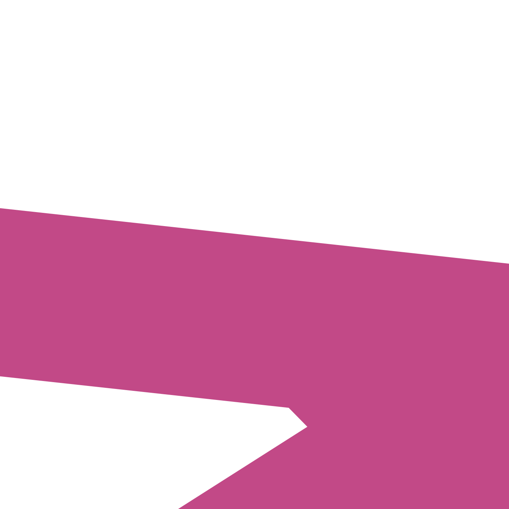
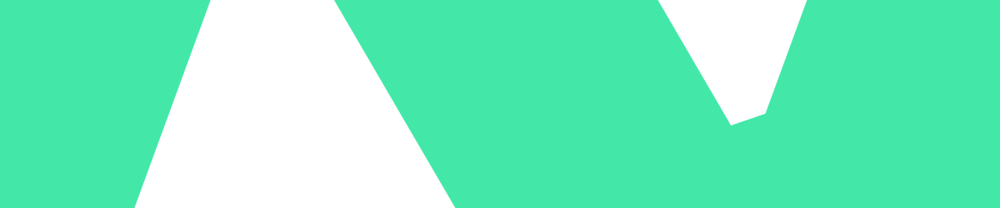
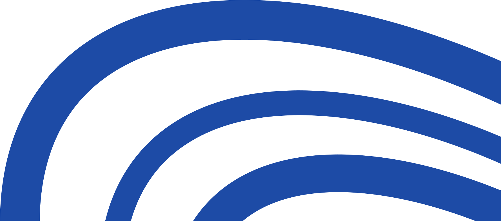
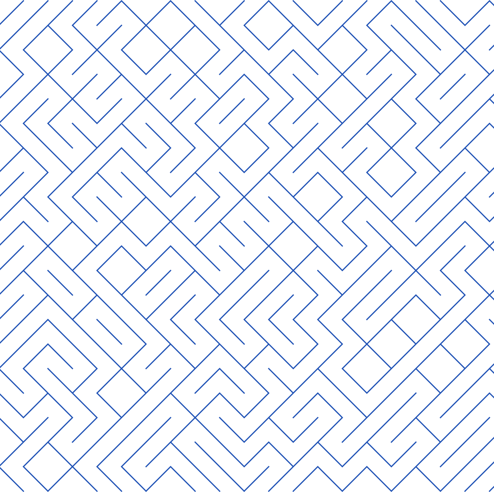
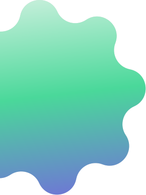

SVG motifs exported from the designers’ Figma file. Use one primary motif per canvas. Recipes: guidelines/02-visual-language.md.

Z colour overlay (square)The wordmark z, enlarged and rotated. Multiply over a greyscale photo. Recolour to green, pink, blue or purple. assets/motifs/z-overlay-shape-large.svg

Z colour overlay (header band)Same letterform cropped for a 1200x250 photo band. assets/motifs/z-overlay-shape.svg
Cropped wordmark, solidFlush right at full height; tone-on-tone or gradient-filled. assets/motifs/wordmark-crop-solid.svgCropped wordmark, outline1px outline version for light linen backgrounds. assets/motifs/wordmark-crop-outline.svg
Corner arc linesThree parallel rounded-corner hairlines, top-right of a banner. assets/motifs/corner-arc-lines.svg

Concentric arc bandsSoft tone-on-tone rings sweeping from a bottom corner. assets/motifs/concentric-arc-bands.svg
Orbit ellipsesOverlapping tilted ellipses; bottom-right of a dark carousel cover at about 35% opacity. assets/motifs/orbit-ellipses.svg

Z-maze patternTone-on-tone line pattern for Deep-Blue people posts. assets/motifs/z-maze-pattern.svg
Quote markGradient parallelogram quote marks for Academy quote slides. assets/motifs/quote-mark.svg
Chain linkGradient-stroke link for partnership and testimonial video. assets/motifs/chain-link.svg

Sparkle starSoft gradient star accent for Academy title cards. assets/motifs/sparkle-star.svg
CSS-only motifs
Soft blobs + grainTwo huge blurred ellipses (lavender, blue to mint) on cream with 10% grain.
Launch glowGreen to blue radial rising from a bottom corner on pure black.Indigo auroraBlack with blurred indigo light; 2026 banners and email headers.Deep Dive panelMedia panel behind product charts.
Can’t Automate
Highlight blockA phrase on a solid rectangle.
→Swipe to learn more
Pill bar + arrow capsuleThe swipe / CTA affordance.